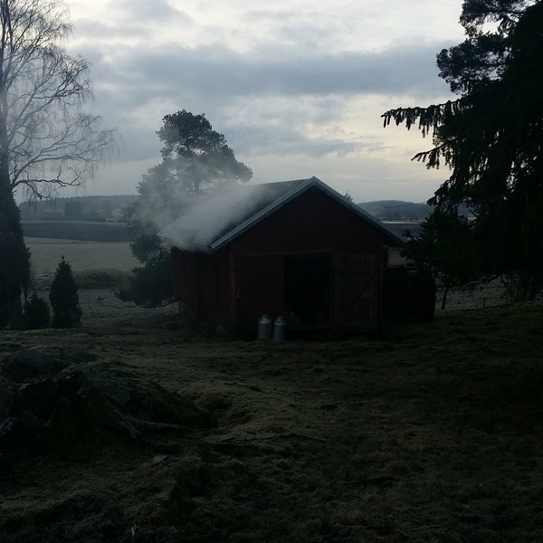

Vanhimmat saunat olivat rakennelmia, joissa oli yksi kuumaksi lämmitettävä tila. Tila lämmitettiin tulisijalla, kiukaalla, jossa liekit lämmittivät tulipesän päälle rakennetun kiviladelman. Nykyisin kyseistä kiuastyyppiä kutsutaan rauniokiukaaksi. Savu nousi kiviladelman läpi suoraan saunatilaan, eli kysymyksessä oli savusauna. Myöhemmin kiviladelma kehittyi muuratuksi kiukaaksi, ilman kiertoa ja savun poistoa varten seinään lisättiin suljettava aukko, räppänä, sekä kattoon puusta tehty hormimainen lakeinen. Saunassa istuttiin korotetuilla lauteilla ja kylvettiin heittämällä vettä kiukaan kiville, jolloin syntyi löylyä eli kuumaa vesihöyryä. Löylyttelyn ja vilvoittelun jälkeen peseydyttiin samassa saunatilassa. Merkittävä muutos saunan kehityksessä oli uloslämpiävän kiukaan kehittäminen eli savuhormin liittäminen kiukaaseen. Uloslämpiävät kiukaat yleistyivät Suomessa 1900-luvun alkupuoliskolla. Kiukaat olivat pitkään kyläseppien tai saunanrakentajien tekemiä, mutta 1900-luvun puolivälistä lähtien tehdasvalmisteiset kiukaat yleistyivät, erityisesti markkinoille tuolloin tulleiden sähkölämmitteisten kiukaitten myötä. Vuosituhannen vaihteessa sähkölämmitteiset saunat yleistyivät Suomessa, ja nykyisin lähes jokaiseen uuteen asuntoon rakennetaan puu- tai sähkölämmitteinen sauna. Yleensä saunan löylyhuoneeseen liittyy erillinen pesuhuone, usein myös pukuhuone. (Wikipedia)
